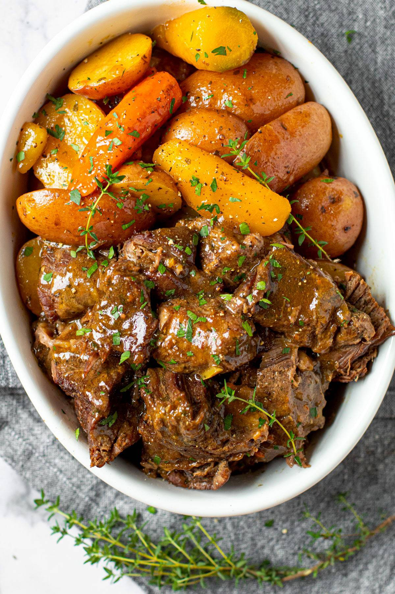

Pot Roast

In simple terms Pot Roast is a dish of meat, usually
brisket of beef or chuck roast, stewed in one piece in a covered
pot and served in its own gravy. However most people would
describe it as the taste of childhood. The smell of this incredible
dish wafting from moms kitchen was always able to make a day
better. It a cost efficient meal that is a great skill to know
how to cook, as it is delicious.
Ingredients you will need!
- Shoulder cut chuck beef
- Olive oil
- Onion
- Garlic
- flour
- Red wine
- Beef broth
- Herbs
- Yellow Potatoes
- Carrots
- Tomato paste
Insructions!
- Heat the olive oil in a dutch oven or heavy-bottomed
pot over medium high heat. Add the seasoned beef and
brown on all sides. Transfer to a plate.
- Add the onion and garlic to the same pot and saute
until soft and translucent. Next, stir in the tomato
paste and flour.
- Deglaze the pot with red wine before pouring in the
beef broth, thyme, and bay leaves.
- Return the seared beef to the pot and surround it
with carrots and potatoes. Cover with a lid and place
in a hot oven.
- Let the pot roast cook for several hours or until the
beef is very tender. Scoop into bowls, garnish with
parsley or cilantro, and enjoy!
Back to Main Page